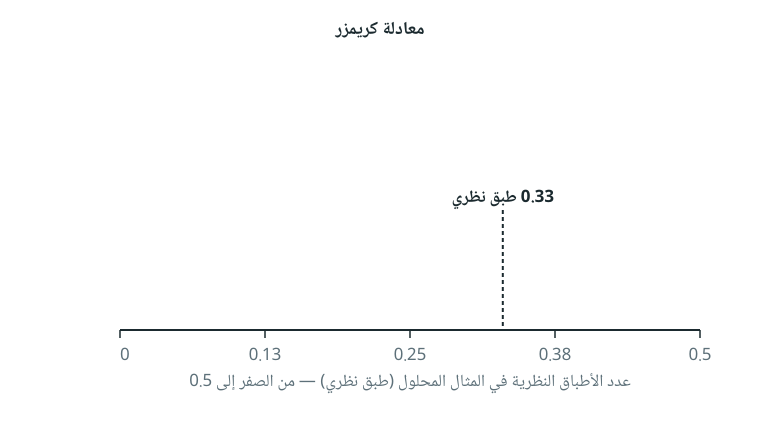

معادلة كريمزر
Kremser Equation
حلّ مغلق لعدد الأطباق النظرية في تعاقب متعاكس التدفّق، يربط العدد بعامل الامتصاص A ونسبة اقتراب الغاز من الاتزان، ويصلح حين يكون خطّا التشغيل والاتزان مستقيمين.
معادلة كريمزر هي حلّ مغلق لعدد الأطباق النظرية في تعاقب متعاكس التدفّق أحادي القسم، كعمود امتصاص أو تجريد. صاغها كريمزر بطريقة المجموعة (group method): تُكتب موازنة المادة حول قمّة العمود لكل مكوّن، ويُستبدل تركيب الطورين بعلاقة اتزان خطّية، ثم يُستبدل التدفّق الداخلي تعاقبيًّا من طبق إلى طبق، فتنتج سلسلة هندسية تُجمَع في صيغة مغلقة. ويظهر في الصيغة عامل الامتصاص A = L/(mV)، وهو نسبة ميل خطّ التشغيل إلى ميل خطّ الاتزان: فإذا كان A أكبر من الواحد أمكن نظريًّا بلوغ أي درجة نقاء بزيادة عدد الأطباق، وإذا كان أصغر من الواحد تلامس خطّ التشغيل مع خطّ الاتزان عند نقطة خانقة ولا يفيد زيادة الأطباق. وتُكتب النتيجة عادةً بدلالة الكسر غير الممتصّ: φ_A = (A − 1)/(A^(N+1) − 1)، ومنها يُستخرج N باللوغاريتم. ويُسمّى مقلوب عامل الامتصاص عامل التجريد S = mV/L. ويُشترط لصلاحيتها أن يكون خطّ التشغيل وخطّ الاتزان مستقيمين، وهو ما يتحقّق في المحاليل المخفّفة حيث تنطبق قانون هنري أو راؤول.
كيف تعمل الظاهرة؟
الآلية جبرية لا فيزيائية: تُكتب موازنة مادة حول قمّة العمود لكل مكوّن، فتربط تدفّق المكوّن في السائل عند طبق ما بتدفّقه في البخار. ثم يُستبدل تركيب الطورين بعلاقة الاتزان الخطّية، فيصير كل تدفّق داخلي معبَّرًا عنه بدلالة التدفّق عند القمّة مضروبًا في عامل الامتصاص. وتُكرَّر هذه الخطوة من طبق إلى طبق، فتنتج سلسلة هندسية حدّها الأول التدفّق عند القمّة وأساسها A. وجمع السلسلة الهندسية هو ما يعطي الصيغة المغلقة، ولذلك يظهر A^(N+1) في المقام: عدد الأطباق يدخل أُسًّا، ولهذا يُستخرج باللوغاريتم.
العلاقة بالأرقام
الصيغة المغلقة: φ_A = (A − 1)/(A^(N+1) − 1)، حيث φ_A الكسر غير الممتصّ من المكوّن. وفي الصورة اللوغاريتمية المكافئة N = ln[(y_b − y_b*)/(y_a − y_a*)] / ln[(y_b − y_a*)/(y_b* − y_a)]، حيث y* التركيب المتوازن مع السائل عند الطبق المقابل. وفي المثال المرجعي (y_b = 0.10، y_a = 0.011، y = 2x، x_a = 0.001) يكون y_a* = 0.002 وy_b* = 0.088، ومنها N ≈ 0.33، ويُقرَّب إلى الأعلى لأن الطبق لا يُجزَّأ. ويُقارَن هذا الرقم في المرجع نفسه بعدد يزيد على سبعة أطباق بطريقة مكيب-ثيل للمسألة نفسها، وهو فرق يعود إلى افتراضات الطريقتين.
مفاهيم متقاربة
التمييز الأول: معادلة كريمزر تُحسب عدد الأطباق عند نسبة تدفّق معطاة، بينما تُحسب نسبة التدفّق الدنيا من شرط تماس خطّ التشغيل مع خطّ الاتزان، وهو شرط مستقلّ يُستخدم بعدها كأساس لاختيار نسبة تشغيل أعلى. التمييز الثاني: A وS مقلوبان، فالامتصاص الجيد يحتاج A أكبر من الواحد، والتجريد الجيد يحتاج S أكبر من الواحد، أي A أصغر من الواحد؛ والخلط بينهما يقلب اتجاه الحكم على الأداء. التمييز الثالث: شرط A أكبر من الواحد شرط نظري لبلوغ أي نقاء بزيادة الأطباق، لا شرط اقتصادي؛ فالتصميم يوازن بين كلفة الأطباق وكلفة السائل الماصّ.
حدود التطبيق
الصلاحية مشروطة بأربعة افتراضات تذكرها المحاضرة المرجعية: محلول مخفّف (التراكيب أقل من نحو 0.1)، وثبات معدّلات التدفّق المولية الإجمالية، وعلاقة اتزان خطّية، وعملية متساوية الحرارة بلا حرارة مصاحبة للانتقال. وكلّ انحراف عن هذه الشروط يُبعد النتيجة عن الصواب، ويُلجأ عندها إلى الحلّ البياني أو الحلّ العددي طبقًا لطبق. وفي الأنظمة متعدّدة المكوّنات يُستعمل عامل امتصاص متوسّط A_e بدل العوامل المنفصلة، وهو تقريب. والعدد الناتج أطباق نظرية لا فعلية، ويحتاج كفاءة طبق للتحويل.

| الكمية | القيمة | المصدر |
|---|---|---|
| تعريف عامل الامتصاص في طريقة المجموعة | A = L/(KV) بلا بُعد | [2] |
| الكسر غير الممتصّ في صيغة كريمزر المغلقة | (A − 1)/(A^(N+1) − 1) بلا بُعد | [2] |
| عامل التجريد | S = KV/L = 1/A بلا بُعد | [2] |
| عدد الأطباق النظرية في المثال المحلول | 0.33 طبق نظري | [1] |
المصادر
- 1 Lecture 03: Absorption — Kremser Equation (Absorption Factor Method) — University at Buffalo (SUNY), Department of Chemical and Biological Engineering — CE407 Separations (2015). wwwcourses.sens.buffalo.edu/ce407/notes/ce407_notes_Lecture03.pdf · اطُّلع عليه 2026-11-28
- 2 Multicomponent Vapor–Liquid Cascades: Group Methods, Absorption and Stripping Factor Methods — IDC Technologies — Technical Reference: Multicomponent Vapor–Liquid Cascades (2010). www.idc-online.com/technical_references/pdfs/chemical_engineering/Multicomponent_Vapor.pdf · اطُّلع عليه 2026-11-28
استشهد بهذا المصطلح
الصيغتان مبنيتان من بيانات الصفحة نفسها: العنوان والتاريخ ورابط النسخة المنشورة.
معادلة كريمزر — Kremser Equation. (2026). ديوان المعرفة — انفراد. https://infiradev.com/diwan/terms/term-kremser-equation.html
@misc{term-kremser-equation2026,
title = {معادلة كريمزر},
titleaddon = {Kremser Equation},
howpublished = {{ديوان المعرفة — انفراد} — مرجع علمي عربي},
year = {2026},
url = {https://infiradev.com/diwan/terms/term-kremser-equation.html},
urldate = {2026-11-28},
note = {مراجعة علمية: Abdullah Al-Huwaidi}
}
راجعه: Abdullah Al-Huwaidi · 2026-11-28 · آخر تحديث 2026-11-28